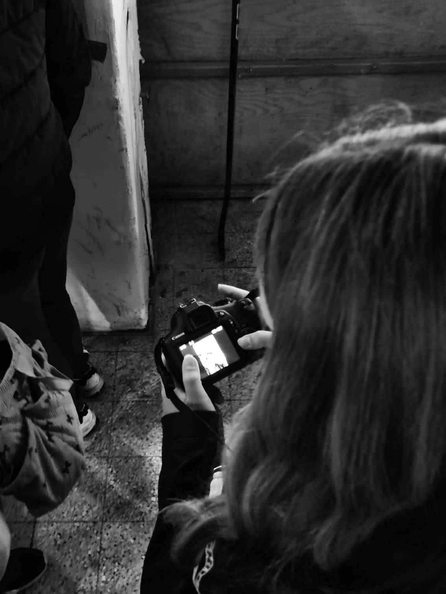

Moja Priča

Tko sam ja?
Bok! Ja sam studentica informatike na Fakultetu informatike i digitalnih tehnologija na Sveučilištu u Rijeci s interesom za dizajn i razvoj multimedijskih sadržaja, uključujući izradu web stranica, aplikacija i vizualnog sadržaja poput grafike i digitalnih materijala. Uz fakultetske projekte vezane uz razvoj web stranica i aplikacija, iskustvo je stečeno i kroz vođenje društvenih mreža sportskih klubova te izradu kreativnog sadržaja za njihove digitalne platforme. Poseban interes usmjeren je na fotografiju i obradu fotografija, ponajviše sportsku fotografiju i portrete. Kroz projekte i praktičan rad kontinuirano se razvijaju tehničke i kreativne vještine s ciljem povezivanja funkcionalnosti, estetike i kvalitetne vizualne komunikacije.